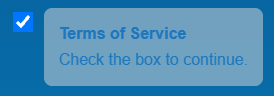
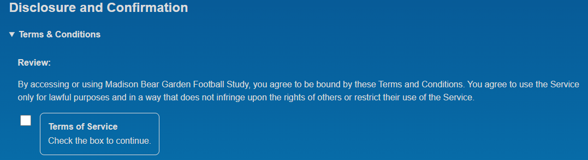
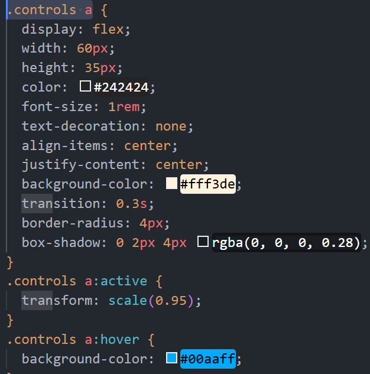
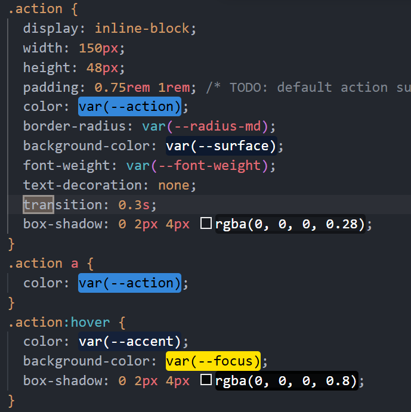

Student: Steven Plomedahl Study context: Football survey
| Specimen | User need / communication purpose | Native HTML used and why | What remains without CSS |
|---|---|---|---|
| Action | Alert to read and agree to the terms and conditions statement. | Anchor element styled as a button. | A link that says "Open Terms". |
| Selection/status |
1. User chooses their favorite from a list of options. 2. A button-styled link to submit vote. |
1. input type="radio" as there are 3 options and the user
has to select one of them.2. Anchor element styled as a button. |
1. Without CSS all three options are still visible and selectable. 2. Link that says "Vote" directly underneath voting options. |
| Disclosure/confirmation | Section for user to agree to terms and conditions statement to proceed. |
input type="checkbox" for user to agree to terms and
conditions statement.
|
Without CSS a checkbox remains with a statement next to it that reads "Terms of service check the box to continue" |
| State | Specimen | Visual cue(s) | How it avoids color-only meaning |
|---|---|---|---|
| Default | High contrast background with arrow and the statement "Open Terms". | It has an arrow and the statement "Open Terms". | |
| Hover | Background color changes to bright yellow, high contrast. | Drop shadow gets darker and more apparent and button still says "Open Terms". | |
| Focus-visible | White, high-contrast border. | Button still says "Open Terms" even when tabbed to with keyboard. | |
| Active |
Using transform, when clicked/pressed the button shrinks
simulating a down-pressed effect.
|
When clicked/tapped/pressed the button simulates a down-pressed effect by shrinking in size. | |
| Selected/checked |
 |
When checkec the checkbox has a white arrow with a blue background and the corresponding label has its opacity reduced. | When checked the checkbox has a checkmark and the opacity of the corresponding label is reduced. |
| Open and status/result |
 |
When disclosure is closed, arrow is pointing to the right. When disclosure is open, arrow is pointing down and previously hidden content is now visible. | It doesn't use color to show a status change; the arrrow points down and previously hidden content is now visible. |
| Technique and selector | Communication purpose | Legibility/fallback check | MDN source |
|---|---|---|---|
Pseudo-elementArrow.action::afterborder-block-start: 0.18em solid currentColor;border-inline-end: 0.18em solid currentColor;transform: rotate(45deg);
|
Arrow points to the right indicating action; by clicking button the user will be directed to another part of the page or another page entirely. | With CSS disabled the pseudo-element is not visible but the link "Open Terms" is visible and clickable. |
MDN Link 1 MDN Link 2 |
Effect 1Transform: scale"Open Terms" button appears to be pushed down when clicked/tapped. .action:activetransform: scale(0.97);
|
It communicates to the user that it is an action element; that clicking the button makes things happen. | With CSS disabled the button is not visible but its anchor/link element is visible and clickable. |
MDN Link 1
MDN Link 2
|
Effect 2Box shadow.specimenbox-shadow: 0 2px 4px rgba(0, 0, 0, 0.28);
|
It's visually pleasing and communicates to the user professionalism and care was taken in creating this webpage. | Not visible with CSS disable and not needed for the site to function and push its message. | MDN Link |
Effect 3Linear background gradient.radio-displaybackground: linear-gradient( to bottom, rgb(124, 132, 124),
rgb(167, 176, 167) );
|
There are several linear and radial gradients throughout the page that signal high-quality and professionalism to the user. | Not visible when CSS is disabled and not required for site message or functionality. | MDN Link 1 MDN Link 2 |
Transition 1:
Selector: .controls a
trigger: hover over the anchor element
Explicit properties:

Transition 2:
Selector: .action
Trigger: hover on anchor element
Explicit Properties:

Keyframe animation:
Name: @keyframes circle
Waypoints: 0deg to 180deg
Trigger: Click/tap/enter on "On" button.
Iteration count: 1
Purpose: Causes the volume knob to rotate clockwise 180 degrees.
Why these properties: They add something cool and extra to the experience as a whole. They are not necessary or required for function, they are there for the appeal.
Reduced-motion alternative: For the radio player animation, when animations are turned off, the dispaly text is on by default and the on/off controls are hidden so they can't trigger an animation.
| Condition | Observed evidence | Result and repair |
|---|---|---|
| Keyboard and focus | All links, buttons, and input elements are focusable with the keyboard and function properly when the enter key or the spacebar is used. | No repair needed. |
| Pointer and no hover-only information | All buttons and inputs/checkboxes are clearly labeled. Button to open disclosure to view terms & conditions is labeled "Open Terms", button to submit vote is labeled "Vote", and the legend for the fieldset that contains the selections reads "Which football team is your favorite?" with the selections themselves being clearly marked. The on and off buttons for the radio player animation are clearly labeled "ON" and "OFF". No hovering with the mouse is required for any of these elements. | No repair needed. |
| Reduced motion | With animations disabled the display of the radio animation reads "WELCOME • Football Live Player" alerting the user that the radio would play (if it was a fully functioning audio player) football related audio content. | No repair needed. |
| Narrow width and 200% zoom |
At 320px, 768px, 1280px there is no crowding or overflow and the site
functions as intended. Except at 200% zoom the
.radio-display element on the animation is partially
hidden by the .controls element. Edit: after further
review, I noticed that the text in the selection elements to choose a
football team was too crowded and flowing over the bacground images.
|
Fix 1: added a media query @ 1000px width that reduces the width of
.radio-display to 450px wide and reduces the font-size to
16px or 1rem.Fix 2: in the media query for small screens, I reduced the width of .choice-help to 70% and reduced the
font-size in the .choice-title element to
0.9rem.
|
| Effects/CSS unavailable | With CSS disabled all content, links, and headings are displayed in a logical order from top to bottom and the site functions as intended. CSS effects are not required for the site to function. | No repair needed. |
| Performance recording |
I did a recording/test where I scrolled the page, click on every button and selection/input and activated the animation. Results of the test were good - "Passed insights (18/18)" |
No repairs needed. |
Screenshot filenames and what each proves:
performance-recording.png is a snapshot of the performance
test ran in Google Chrome dev tools and shows that the webpage passed
the tests (insights).
320px01.png, 320px02.png, and
320px03.png show that webpage fits with no crowding or
overflows at narrow width 320 pixels.
200z01.png, 200z02.png,
200z03.png show that the webpage fits and functions at
different viewport widths.
Repair and retest summary: One repair that was needed was
to fix the .radio-display element from being partially hidden
by the .controls element with the browser window at 200%
zoom. To do this I added a media query that specifies at 1000px width the
.radio-display element's max-width should be
450px and the font-size should be 1rem. Changing the
max-width fixed the issue, as evidenced by the
200z03.png screenshot.
Tool and purpose, or none: None
Prompt/task: None
Accepted, changed, or rejected output: None
How I verified it with sources and tests: None